10 部片单 · 恐怖 / 科幻 / 惊悚 / 悬疑 / 剧情
| # | 片名 | 类型 | 评分 / 状态 |
|---|---|---|---|
| 01 | 编号17 | 科幻 / 黑色喜剧 / 剧情 | 7.0 / 77% / 72 |
| 02 | 咒物寻凶 | 恐怖 / 悬疑 / 惊悚 | 96% / 85% / 78 |
| 03 | 魔鬼深夜秀 | 恐怖 / 伪纪录 / 惊悚 | 97% / 82% / 72 |
| 04 | 荧屏在发光 | 心理恐怖 / 剧情 / 悬疑 | 84% / 86 / 5.8 |
| 05 | 布谷鸟 | 恐怖 / 惊悚 / 科幻 | 78% / 62 / 60% |
| 06 | 隔空投送 | 惊悚 / 悬疑 / 剧情 | 83% / 79% / 65 |
| 07 | 周处除三害 | 犯罪 / 剧情 / 悬疑 | 8.4 / 7.6 / 6.65 亿元 |
| 08 | 感应 | 悬疑 / 恐怖 / 剧情 | 88% / 77 / 52% |
| 09 | 黑色电话2 | 恐怖 / 悬疑 / 惊悚 | 72% / 82% / 61 |
| 10 | 疯狂的麦克斯：狂暴女神 | 科幻 / 动作 / 惊悚 | 90% / 80% / 79 |
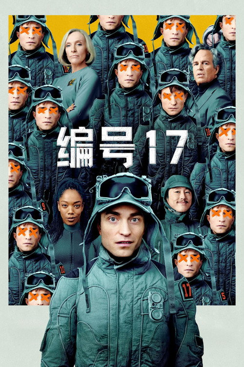
编号17 Mickey 17
「你今天死了几次？」——这是飞船上最平常的一句问候。
剧情梗概
米奇·巴恩斯在地球上一事无成，为了躲债签下星际殖民计划，成为飞船上唯一的「消耗体」：干最危险的活，死了就被 3D 打印重生，记忆与人格照旧上传。到第 17 号米奇从一次任务里死里逃生回家时，他发现 18 号已经坐在了自己的位置上。规定是同一时间只能存在一个米奇——于是 17 号得先想办法，别让自己被自己取代掉。
亮点
- 奉俊昊（《寄生虫》《杀人回忆》《雪国列车》）自编自导的第八部长片，也是他第一次拿到好莱坞大片的最终剪辑权。
- 改编自爱德华·阿什顿 2022 年的小说《米奇7号》。奉俊昊把书名从「7」改成「17」，理由是想让米奇多死十几次。
- 罗伯特·帕丁森一人分饰 17 号与 18 号；配角阵容包括史蒂文·元、马克·鲁法洛、托妮·科莱特、娜奥米·阿基。
- 制作成本 1.18 亿美元、宣发 8000 万，全球票房仅 1.31 亿——业内估算亏损 7500 万至 9500 万美元，是华纳 2025 年开年最大的一笔滑铁卢。
- 内地与北美 2025 年 3 月 7 日同步上映，内地最终票房不足 2000 万人民币。
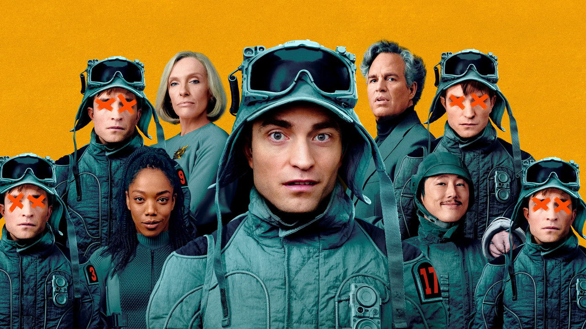
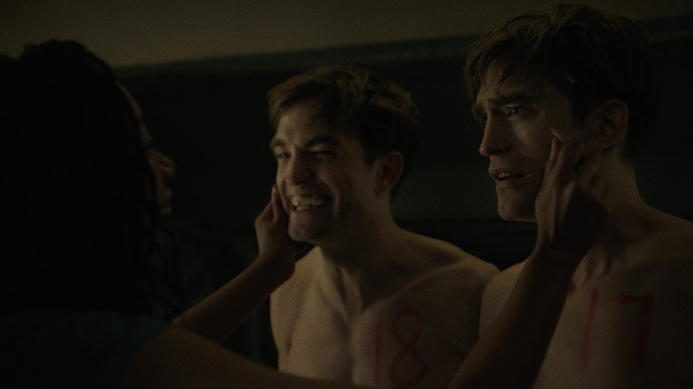
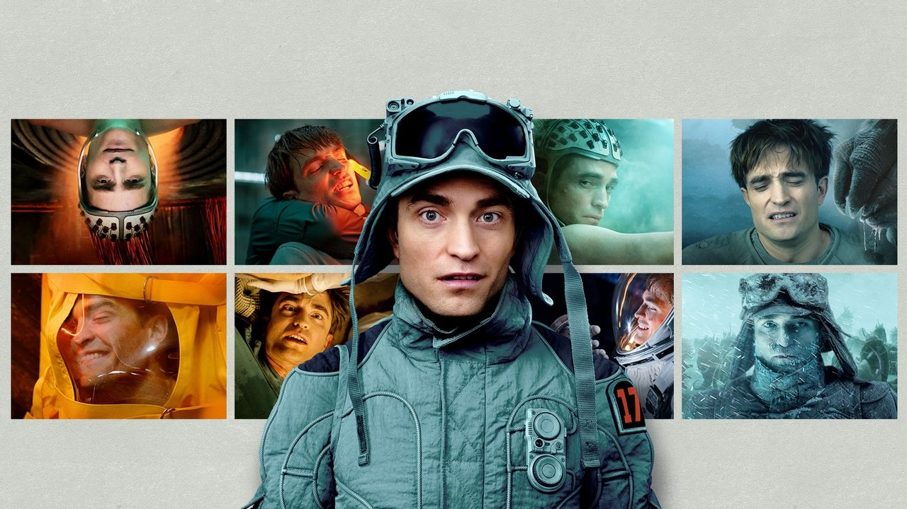
导演与主创 · 他们的历史作品

 寄生虫
寄生虫 雪国列车
雪国列车 杀人回忆
杀人回忆 玉子
玉子
 新蝙蝠侠
新蝙蝠侠 暮光之城
暮光之城 灯塔
灯塔 信条
信条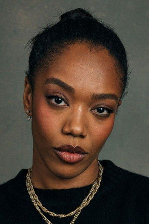
短评（轻微剧透）
大约在前四十分钟，这是奉俊昊。飞船被拍成一个公司的实体：热量按配额发放，死亡按流程登记，米奇每一次被打印出来都像新员工入职。那个「宇宙牛马」的比喻既好笑又准确，帕丁森把 17 号演成一个已经被驯化到不会愤怒的人，而 18 号恰恰是他压抑掉的那部分。问题出在两人相遇之后——本该是伦理困境的开始，影片却转身去拍分身闹剧。议题一个接一个地加：阶级、生态、极端政治、身体自主权，每一个都提了，每一个都没展开，后两幕因此显得又长又空。马克·鲁法洛的马歇尔被写成卡通化的反派，讽刺的锋利度反而被磨平。所以我不认为它「很糟」——豆瓣 7.0、RT 77%、Metacritic 72 都是「还行」的分数，它更像一次定位失败：华纳按商业大片卖，奉俊昊按作者电影拍。冲着《寄生虫》那种精密结构去的会失望；只想看帕丁森在太空里反复死去、且死得挺有幽默感的，它其实相当好看。
为什么值得一看
奉俊昊的影迷（看看他英语片的另一面）；罗伯特·帕丁森的影迷（这是他近年最松弛的一次表演）；想看一部不那么严肃的太空科幻的人。R 级，有暴力与性笑话，别期待第二部《寄生虫》。内地院线已下线，腾讯视频可看。
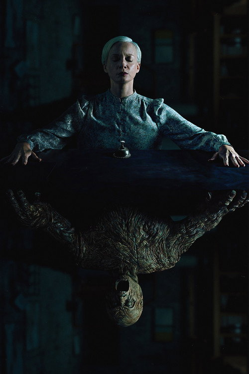
咒物寻凶 Oddity
复仇不需要凶器，需要一件古董。
剧情梗概
丹妮在乡下的老宅里被杀，凶手据信是她丈夫泰德工作的精神病院里逃出来的病人——而那个人很快也死了。一年后，丹妮的盲人双胞胎姐姐达西找上门来。达西经营一家「诡物」店，自称能通灵，她带来了店里最危险的几件藏品，住进泰德和他新女友的房子。她要做的事很简单：让这栋房子自己说出那一晚发生了什么。
亮点
- 爱尔兰导演达米安·麦卡锡（《危险警告》Caveat）自编自导的第二部长片，2024 年 SXSW 首映后由 IFC / Shudder 拿下。
- 卡罗琳·布莱肯一人分饰双胞胎丹妮与达西；格威利姆·李（《波西米亚狂想曲》里的皇后乐队吉他手布莱恩·梅）饰泰德。
- 麦卡锡坚持大量使用实体道具与实景机关，那具木雕「怪人」是真的实物，不是 CGI。
- 迈克·弗拉纳根（《鬼入侵》《睡梦医生》）在 Letterboxd 上公开推荐，称它是「恐惧、氛围与张力的大师课」。
- 入选 2024 年「Science of Scare」实验评选的影史最吓人电影前 20——该实验给 250 名观众测心率与心率变异，它排在《招魂》《遗传厄运》之间。
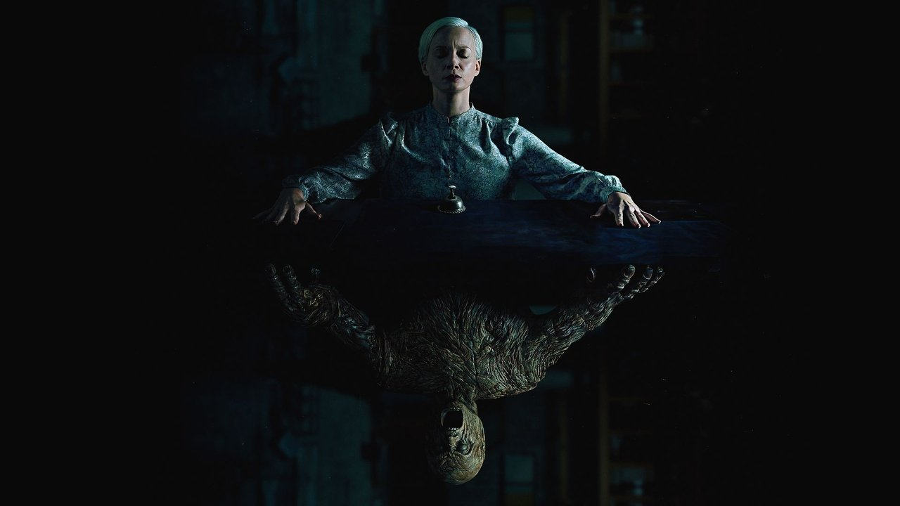
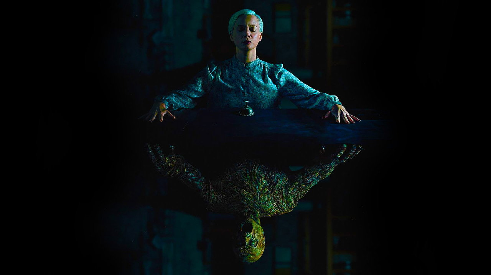
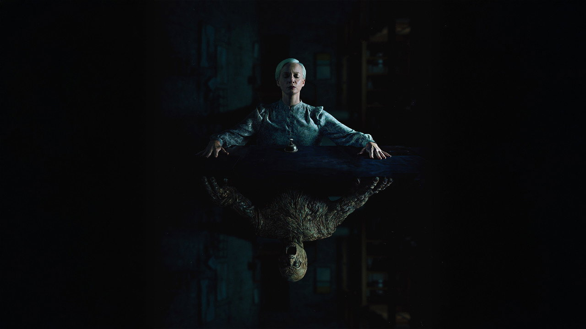
导演与主创 · 他们的历史作品
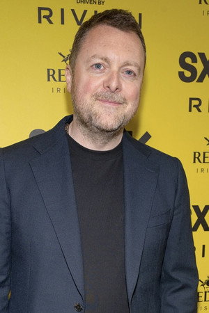
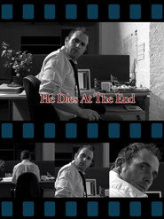
He Dies at the End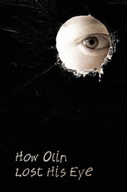
How Olin Lost His Eye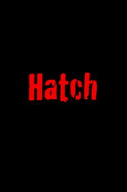
Hatch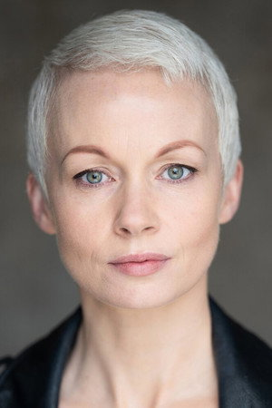
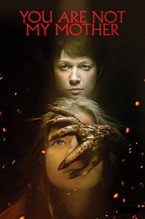
你不是我妈妈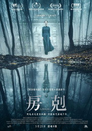
房客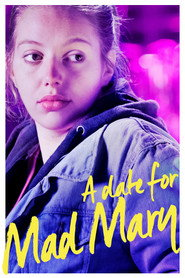
疯狂玛丽的约会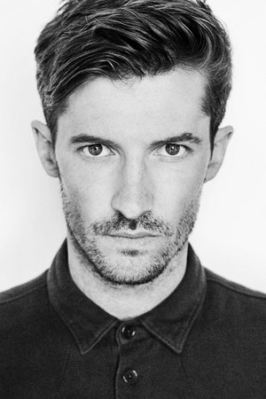
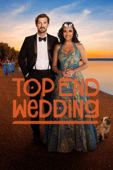
无上婚宴短评（轻微剧透）
这部片只有 98 分钟，几乎没有废镜头，而且它敢做一件现在很多恐怖片不敢做的事：老老实实讲一个鬼故事，然后靠氛围而不是靠解释把它讲完。麦卡锡最聪明的一手是那具木雕——它从头到尾一动不动地待在画面里，可你每一秒都在等它转头。这种「用静止制造紧张」的手法比任何跳吓都有效，因为它把恐惧的责任交还给了你的眼睛。卡罗琳·布莱肯一人演两角，姐姐达西的盲不是设定装饰，而是叙事工具：她看不见，所以只能听、只能摸、只能靠那些古董，这反而让她比所有明眼人都更早接近真相。第三幕的反转不复杂，甚至有点老派，但因为前面每一件道具都被认真铺垫过，落点就格外扎实。缺点也说清楚：中段节奏略慢，个别配角像工具人；IMDb 6.7 说明普通观众没影评人（96%）那么买账。想在 100 分钟里被认真吓几次，它现在是流媒体上性价比最高的一部。
为什么值得一看
喜欢《鬼入侵》《招魂》那一路老派鬼屋的观众；想看低成本恐怖怎么靠氛围打败预算的人；不想被血腥场面劝退的（本片暴力克制、以气氛取胜）。内地无引进，Shudder / Hulu / AMC+ 已上线。
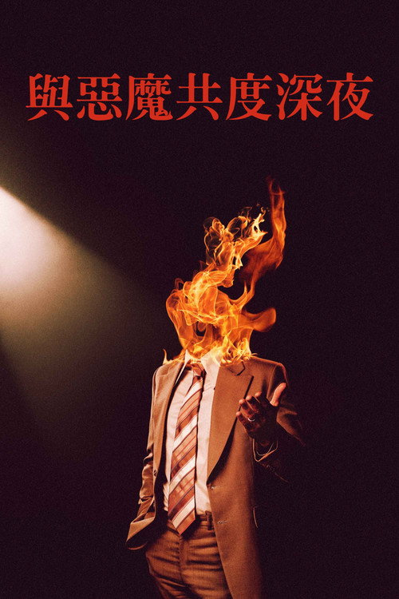
魔鬼深夜秀 Late Night with the Devil
直播不能停——哪怕现场已经开始不对劲。
剧情梗概
1977 年 10 月 31 日深夜。主持人杰克·德洛里的《夜猫子》一直在收视上输给强尼·卡森，妻子去世后更是每况愈下。为了翻身，他做了一档万圣节特别节目：请来灵异学专家琼·罗斯-米切尔和她声称被恶魔附身的病人莉莉，在镜头前做一场现场驱魔。整部影片以「失落的录像带」的形式呈现——前面是脱口秀，后面就不是了。
亮点
- 澳大利亚的凯恩斯兄弟（科林与卡梅伦）自编自导；2023 年 SXSW「Midnighters」单元世界首映。
- 大卫·达斯马齐连（《蚁人》《银翼杀手2049》《沙丘》《X特遣队：全员集结》）第一次挑大梁，凭本片拿下堪萨斯城影评人协会最佳男演员。
- 斯蒂芬·金提前看了拷贝，在社交平台写：「它绝对精彩，我移不开眼。请你们去看。」
- 全片按 1970 年代电视节目的技术规范拍摄，大量使用实体特效与木偶，仅在必须处用 CG。
- 北美 1034 家影院开画，首周末 280 万美元，是 IFC 发行影片的历史最佳开画成绩。
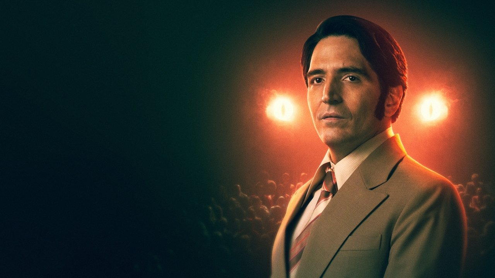
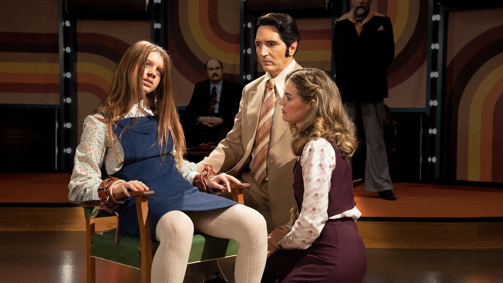
导演与主创 · 他们的历史作品
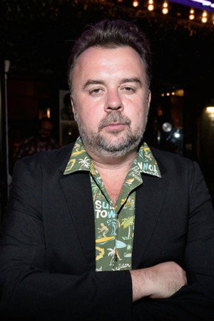
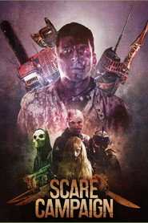
恐吓运动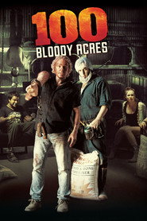
尸骨化肥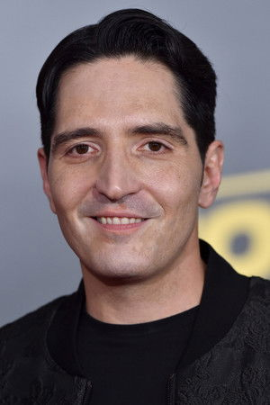
 蚁人
蚁人 X特遣队：全员集结
X特遣队：全员集结 银翼杀手2049
银翼杀手2049 沙丘
沙丘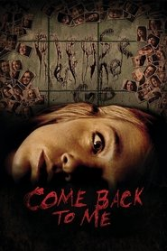
Come Back to Me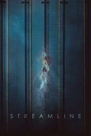
流线型人生短评（轻微剧透）
「把整部电影伪装成一档 1977 年的脱口秀」听起来像是个只能撑二十分钟的点子，结果它撑了 93 分钟，而且越到后面越紧。凯恩斯兄弟做得最对的一件事，是把综艺节奏和恐怖节奏接成了同一根线：开场那段主持人的套话、现场乐队的过门、广告口播，全都在认真还原，于是当第一个不对劲的时刻出现时，你已经被「节目还在继续」的惯性绑住了——这才是伪纪录最有效的用法。达斯马齐连的表演是另一个支点，他把杰克演成一个真诚地相信收视率能拯救自己的人，那种讨好感和后来的崩塌是同一件事。技术上也很扎实：实体特效、暖色调的录像带质感、现场观众的反应都被认真做过。缺点必须说清楚：结尾那一段转向 CG，不少观众认为它「崩了」，这个批评成立；影片也曾因使用 AI 生成图卡引发争议。但 97% 的烂番茄不是白给的——它是近五年最会玩形式的恐怖片之一。
为什么值得一看
伪纪录 /「拾得录像」爱好者的必看；喜欢《灵动：鬼影实录》《致命录像带》但想要更高完成度的人；大卫·达斯马齐连的影迷。结尾有争议，心理承受力一般的别在深夜看。内地无引进，Disney+ / Hulu / AMC+ 已上线。
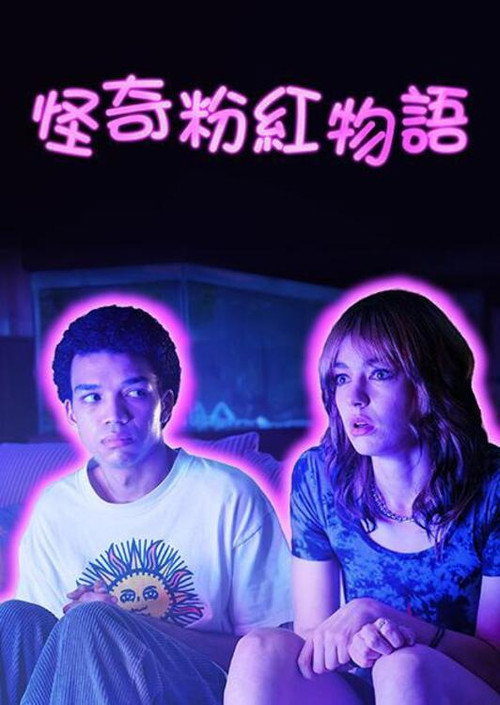
荧屏在发光 I Saw the TV Glow
有些节目不是给你看的，是叫你走的。
剧情梗概
1990 年代的美国郊区。高中生欧文活得没什么存在感，直到同学麦迪把一部深夜剧集《粉红不透明》塞给他——剧里两个女孩拥有某种能力，能看穿一个「在我们这个世界之下」的地方。从此欧文每周守着电视，他和现实之间的关系开始松动。几年后麦迪消失了，又几年后她回来了，说这些年她一直活在《粉红不透明》里面，并要求欧文承认：他记得的那一版人生，其实不是真的。
亮点
- 简·舒恩布伦（《我们都要去世界博览会》）自编自导的第二部长片，A24 出品，艾玛·斯通与戴夫·麦卡里担任制片。
- 配乐由 Alex G 操刀；原声带收录 Phoebe Bridgers、Caroline Polachek、Sloppy Jane、Snail Mail 等。
- 马丁·斯科塞斯看后公开称赞它「在情感和心理上都有力量」；保罗·施拉德称舒恩布伦是「近十年影坛最原创的声音」。
- 被广泛解读为一则关于跨性别经验的寓言——《纽约客》的理查德·布罗迪称它是「对跨性别经验的深刻呈现」。
- 口碑极度分裂：Metacritic 86、烂番茄 84%，但 IMDb 只有 5.8，影评人与观众的落差是 2024 年最大的之一。
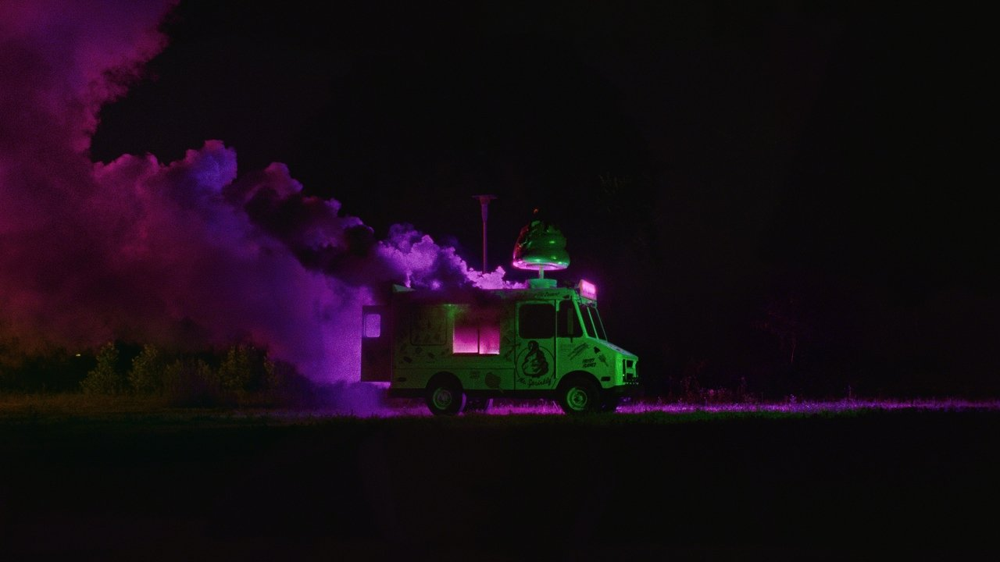
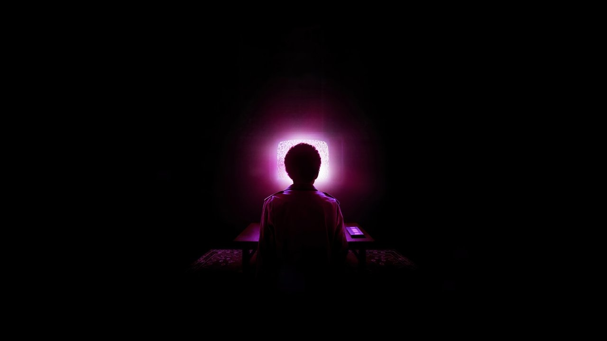
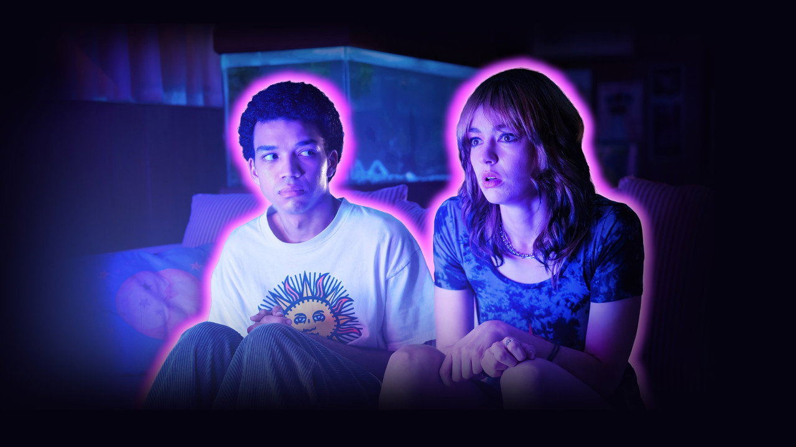
导演与主创 · 他们的历史作品
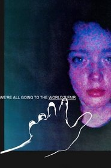
我们都要去世界博览会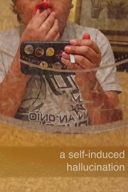
A Self-Induced Hallucination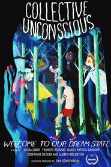
Collective: Unconscious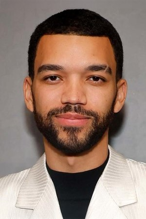
 大侦探皮卡丘
大侦探皮卡丘 侏罗纪世界2
侏罗纪世界2 龙与地下城：侠盗荣耀
龙与地下城：侠盗荣耀 所有明亮的地方
所有明亮的地方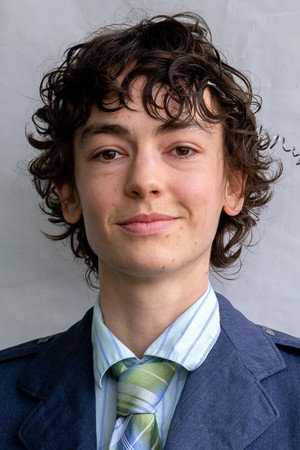
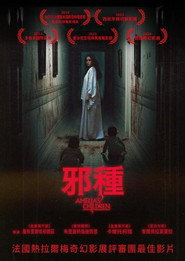
艾米利亚的孩子短评（轻微剧透）
这不是一部「好看」的电影，它是一部会卡在你身体里的电影。舒恩布伦拍的不是剧情，是一种状态：那种你明明活着、却觉得自己被放进了一段不属于自己的录像里的感觉。全片几乎没有传统意义上的恐怖镜头，可它比绝大多数恐怖片更让人不安——因为它的恐惧不来自鬼，而来自「你可能永远来不及成为自己」。《粉红不透明》这个虚构剧集是关键设计：它既是欧文和麦迪之间的秘密语言，也是那句没说出口的话的替身。贾斯提斯·史密斯与布里吉特·伦迪-潘恩都演得极好，尤其伦迪-潘恩，麦迪每次出现都像是从另一个频段挤进来的声音。缺点必须如实说：它沉闷、抽象、拒绝解释，IMDb 5.8 反映的是大量观众在中途放弃。《洛杉矶时报》说它「发明了一种新情绪：激情的冷漠」——这句话既是批评，也是最准确的描述。对 A24 的文艺恐怖有耐性的人，会视它为近年的私密之作；没有耐性的，只会觉得什么都没发生。
为什么值得一看
A24 影迷；《我们都要去世界博览会》的观众；对身份与亚文化寓言有兴趣的人。节奏慢、结构开放、没有明确答案，想看一个「完整故事」的请绕道。内地无引进，流媒体可看。
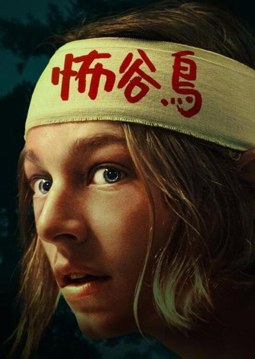
布谷鸟 Cuckoo
杜鹃不筑巢，它把蛋下在别人的窝里。
剧情梗概
母亲去世后，17 岁的格雷琴跟着父亲、继母和不会说话的异母妹妹搬到德国阿尔卑斯山区的一处度假村——父亲受雇于神秘的老柯尼希，负责在这里建一座新酒店。入住不久怪事接连发生：女客人莫名呕吐，妹妹会因某种尖锐鸣叫抽搐，格雷琴夜里骑车时被一个戴兜帽的女人追。她慢慢发现，这里藏着一种靠「巢寄生」繁衍的类人物种。
亮点
- 德国导演蒂尔曼·辛格自编自导的第二部长片，2024 年柏林电影节特别展映单元世界首映。
- 亨特·莎弗（《亢奋》《饥饿游戏：鸣鸟与蛇之歌》）首次担纲电影主演；丹·史蒂文斯（《唐顿庄园》《不速之客》）饰柯尼希。
- 全片用 35mm 胶片拍摄，取景德国北莱茵-威斯特法伦州，摄影指导保罗·法尔茨。
- 核心设定借自杜鹃的「巢寄生」行为：这个物种不自己养育后代，而是把幼体植入人类体内。
- 口碑两极：烂番茄 78%、Metacritic 62、CinemaScore 仅 C+，影评人欣赏它的方法，普通观众普遍觉得「看不懂」。
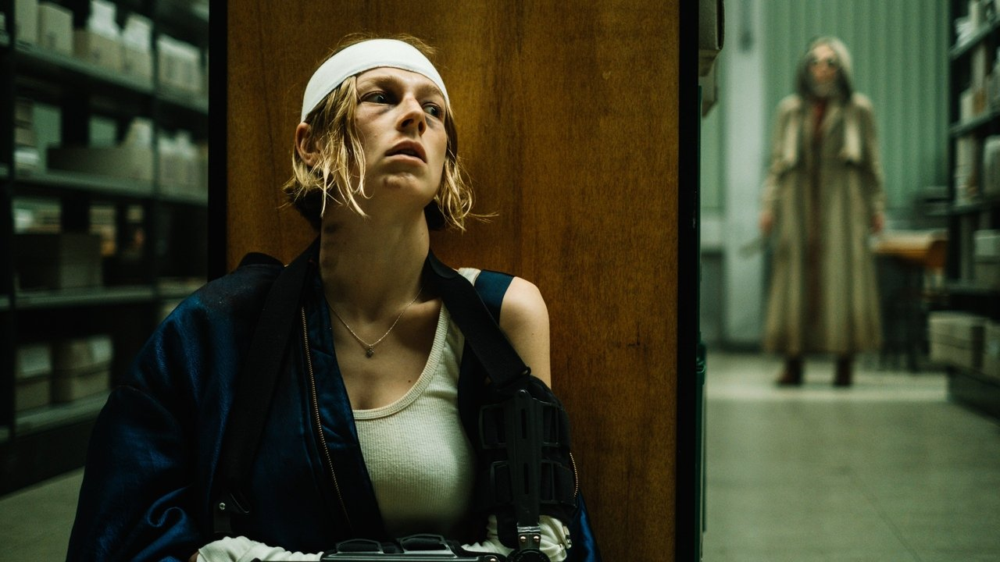
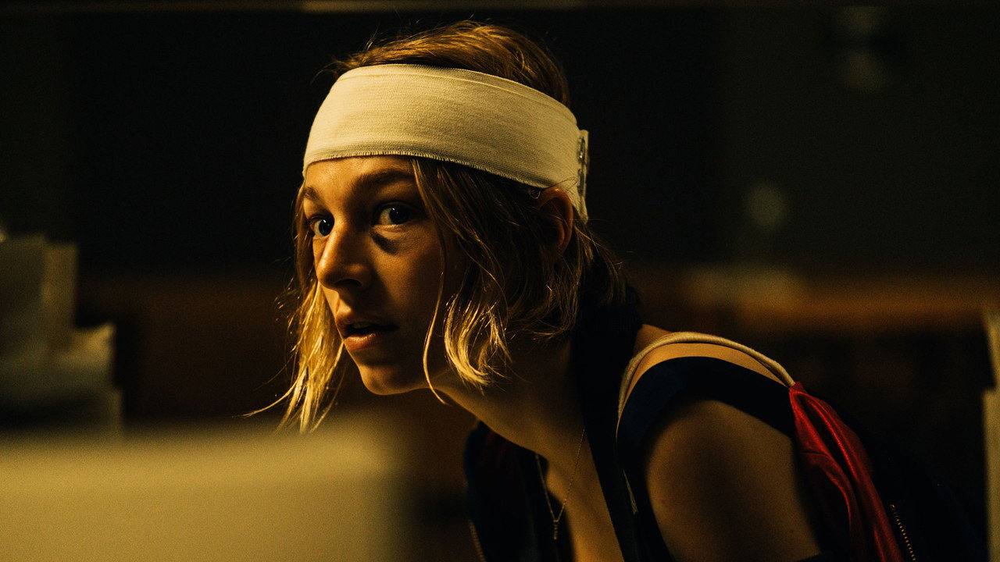
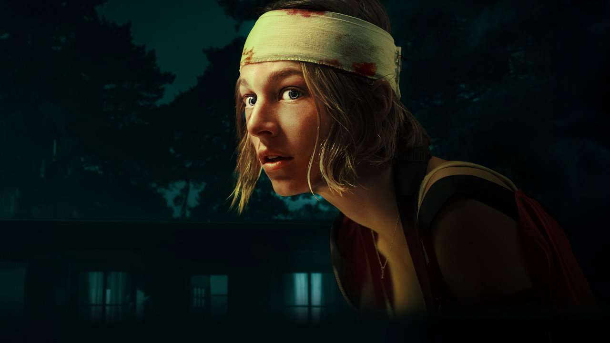
导演与主创 · 他们的历史作品
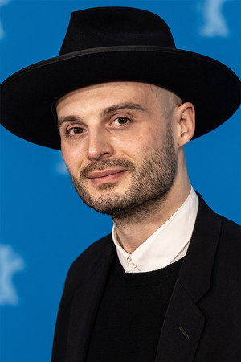
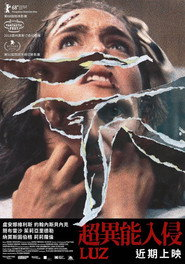
卢斯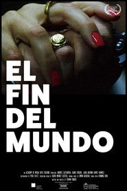
The End of the World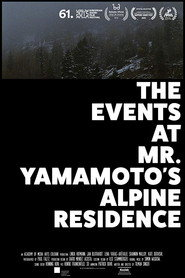
The Events at Mr. Yamamoto's Alpine Residence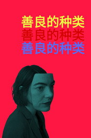
善良的种类
 美女与野兽
美女与野兽 不速之客
不速之客 野性的呼唤
野性的呼唤 使徒
使徒短评（轻微剧透）
「鸣叫」这个设定是它最好的部分——一种声音既能让人失去方向，又能催熟体内的胚胎，等于把恐怖片里最常见也最廉价的两个元素（声音吓人、身体恐怖）合并成了同一套机制。辛格的调度相当有想法，35mm 的颗粒感与阿尔卑斯的日光让整部片看起来既干净又不对劲，日夜颠倒的度假村像一个被拉长的梦境。亨特·莎弗撑住了格雷琴，她的烦躁与脆弱没有被美化；丹·史蒂文斯则难得地演了一个让人不舒服的「好人」。问题在剧本：它抛出太多线索（呕吐的女人、抽搐的妹妹、被偷走的母亲遗物），最后收束得仓促，很多疑问没有答案。Metacritic 62、观众 60% 说明的是同一个落差。导演自己说过，他更在意情感逻辑而不是字面逻辑——这句话能解释它所有的优点，也能解释它所有的毛病。
为什么值得一看
喜欢《仲夏夜惊魂》那种「日光下的邪典」的人；亨特·莎弗 / 丹·史蒂文斯的影迷；想看一部有作者风格、不按套路收尾的恐怖片的人。含身体恐怖与惊吓段落，逻辑党慎入。内地无引进，Hulu 已上线。
隔空投送 Drop
他就在你附近，而且他看得见你笑了没有。
剧情梗概
薇奥莱特是个丧偶的单身母亲，多年来第一次赴约。餐厅在高层，夜景很好，对方亨利也比照片上更体面。然后她的手机开始收到匿名「投送」：表情包、威胁，最后是一段她家客厅的实时监控——一个戴兜帽的人就站在她儿子和妹妹身后。指令很简单：不许告诉任何人，按我说的做。而最后一条是：杀了亨利。
亮点
- 克里斯托弗·兰登（《忌日快乐》《忌日快乐2》《砍人快乐》）执导，他在退出《惊声尖叫7》之后接下了这个项目。
- 灵感来自一个真实段子：Smosh 成员 Olivia Sui 在约会时被陌生人用 AirDrop 连发了一堆怪物史莱克表情包——「当时觉得很怪很吓人」，后来变成了剧本。
- 梅格翰·法伊（《白莲花度假村》第二季、《完美伴侣》）首次担任电影女主角；布兰登·斯克莱纳（《爱情，到此为止》）饰亨利。
- 几乎全片发生在一间餐厅内，是「单一场景 + 实时推进」的结构练习。
- 制作成本 1100 万美元、全球票房 2870 万，是 2025 年布伦屋少数影评人口碑过关的片子（83%）。
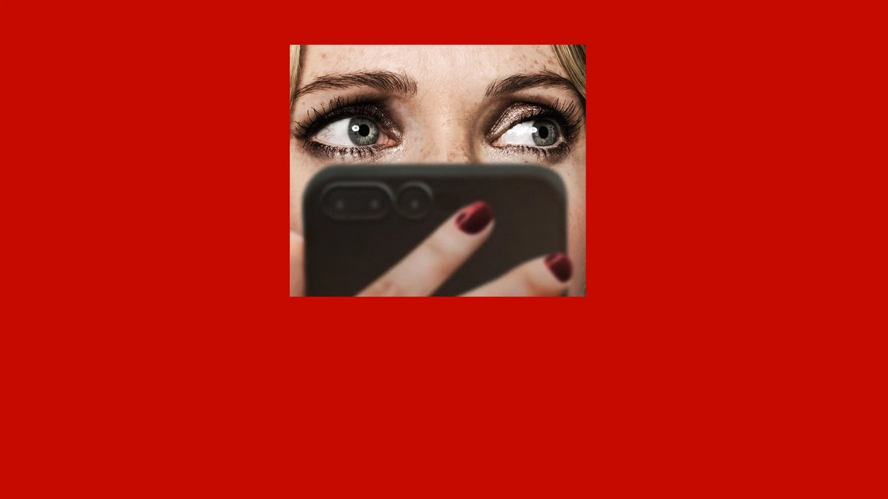
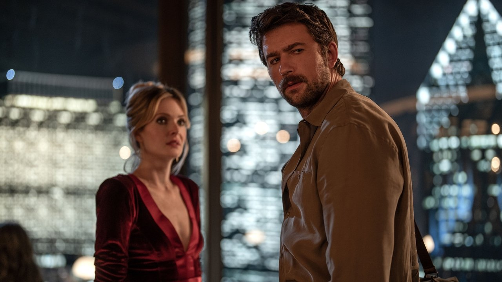
导演与主创 · 他们的历史作品
 忌日快乐2
忌日快乐2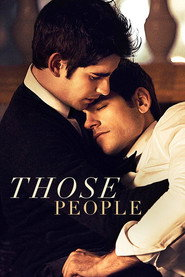
那些人们 爱情，到此为止
爱情，到此为止 副总统
副总统短评（轻微剧透）
这是一部把「设定」拍干净的电影。AirDrop 这个点子其实脆弱——现实里你关掉接收就行了——但兰登很聪明地不去跟现实较劲，他把全部力气放在「一个人被要求在九十分钟里同时演好两场戏」这件事上：一边维持约会的体面，一边执行勒索。这个双重表演成了全片的引擎，而法伊接住了它，她的每一次微笑转冷都是真的在演两个状态。技术上也很克制：单一场景、实时推进，靠剪辑节奏与声音设计制造压迫，而不是靠场面。缺点明确：第三幕升级过头，从心理惊悚滑向动作片，那一段的合理性撑不住；有几处角色行为需要你主动配合。Metacritic 65、观众 79% 的定位很准确——它是一部「爆米花惊悚片」，评价是「好看但不值得深究」。想要周五晚上九十分钟不无聊，它完成得相当漂亮。
为什么值得一看
想要一部短、紧、不费脑的惊悚片的人；《白莲花度假村》之后想看梅格翰·法伊挑大梁的观众；喜欢《狙击电话亭》《生死时速》那种限定空间设定的影迷。PG-13，暴力不重。内地未引进，主流平台可租看。
周处除三害 The Pig, the Snake and the Pigeon
他不是想做好人，他只是不想死得没人记得。
剧情梗概
通缉犯陈桂林躲了四年，奶奶去世后他决定自首。到警局排队时发现要身份证，转头看见通缉榜上自己只排第三——前面还有「香港仔」和「牛头」。他决定先把这两人解决掉再投案，好歹留个名字。第一站是虐待继女的香港仔，第二站是一个打着灵修旗号、骗财害命的组织。等他真的把它们一个个清掉，才发现「贪嗔痴」三个字的最后一笔指的是谁。
亮点
- 香港导演黄精甫（《江湖》《复仇者之死》）自编自导并亲自剪辑；片名与结构取自《晋书·周处传》与《世说新语》的典故。
- 英文片名 The Pig, the Snake, and the Pigeon——猪、蛇、鸽在佛教中对应痴、嗔、贪，正好是片中三个人物。
- 阮经天（凭《艋舺》获金马影帝）饰陈桂林；袁富华（凭《叔·叔》获金马最佳男配）饰香港仔；陈以文（《阳光普照》金马影帝）饰尊者／牛头。
- 获第 60 届金马奖最佳动作设计，入围最佳导演、最佳男主角等 7 项；获第 42 届香港电影金像奖最佳亚洲华语电影。
- 2024 年 3 月 1 日内地公映，豆瓣开分 8.1 后一路涨至 8.4，最终票房 6.65 亿，是当年华语片最大的黑马。
导演与主创 · 他们的历史作品
 艋舺
艋舺 2046
2046短评（轻微剧透）
它的魅力不在故事，在陈桂林这个人。一个通缉犯决定「临死前干票大的留名」，这个动机既不崇高也不悲情，反而幼稚得可爱——而黄精甫就顺着这份幼稚，让他一路撞进两个比他更烂的世界里。香港仔那段是纯粹的暴力美学，动作设计利落、狠、不炫技；但真正让这片子立起来的是「新心灵舍」那一段：当陈桂林坐在一个满口慈悲的骗子面前，观众和他同时意识到，最可怕的恶往往穿着最体面的外衣。阮经天演出了陈桂林的天真——他不是觉醒，他是慢慢发现自己一直在被骗，包括被那个「自己快死了」的谎言骗着。这个谎言是全片最温柔也最狠的一笔。缺点也说清楚：三段式结构在衔接上略生硬，灵修中心一段的群像处理得有些卡通化；影片另有抄袭争议（导演钱人豪提起诉讼，尚无最终判决），看之前可自行了解。豆瓣 8.4 略高于它的实际完成度，但作为一部华语犯罪片，它已经很久没这么有脾气了。
为什么值得一看
华语犯罪片观众；《艋舺》《阳光普照》那一路台片的影迷；想看一部「有话要说」却依然很好看的商业片的人。暴力尺度大（多处枪击与近身搏杀），内地公映版有删减。Netflix / 腾讯视频 / 爱奇艺等可看。
感应 Presence
全片没有一帧在鬼的视角之外——因为摄影机就是那个鬼。
剧情梗概
一家四口搬进郊区的新房。女儿克洛伊刚失去挚友，和哥哥、母亲都处不好，觉得自己在这个家里是多余的。她很快察觉屋里还有「别人」——一个看不见的东西跟着她、观察她，然后慢慢把注意力转向整个家庭。而摄影机就是那个东西：它全程贴着人的背、停在楼梯口、从门缝往里看，从不干预，只是看着。
亮点
- 史蒂文·索德伯格自导，并亲自掌镜与剪辑（沿用化名 Peter Andrews / Mary Ann Bernard）。
- 全片以「鬼的视角」拍摄，摄影机长期处于贴身跟随或静止观察的位置，是一次彻底的第一人称实验。
- 刘玉玲（《杀死比尔》《霹雳娇娃》）饰母亲；克里斯·沙利文饰父亲；新人卡莉娜·梁饰女儿克洛伊；朱莉娅·福克斯饰房产中介。
- 剧本由大卫·凯普（《侏罗纪公园》《蜘蛛侠》《碟中谍》）撰写，全片仅 85 分钟、11 天拍完。
- 2024 年圣丹斯首映，NEON 以 500 万美元买下发行权；2025 年 1 月 24 日北美公映。
导演与主创 · 他们的历史作品

 饥饿游戏
饥饿游戏 十一罗汉
十一罗汉 十二罗汉
十二罗汉 十三罗汉
十三罗汉 杀死比尔
杀死比尔 功夫熊猫
功夫熊猫 功夫熊猫2
功夫熊猫2 银河护卫队2
银河护卫队2 加勒比海盗2：聚魂棺
加勒比海盗2：聚魂棺短评（轻微剧透）
索德伯格用一次形式实验，把一个最俗套的鬼屋故事重新变得陌生。他的选择是极端的：整整 85 分钟，摄影机就是那个鬼。于是你会看到一些从未在恐怖片里出现过的画面——镜头停在楼梯上看着一家人吃饭，或者慢慢靠近一个背对着它的人，然后停下。它不吓你，它只是「在」，这种持续的在场所带来的不适，比任何跳吓都更持久。而真正聪明的是，形式不只是噱头：因为镜头是鬼，取景本身就变成了情感表达——它靠近谁、远离谁、在哪个门口犹豫，都在告诉你这个「存在」在想什么。中段开始，焦点从惊悚转向一个家庭正在崩解的现实：偏心的母亲、冷漠的哥哥、被忽视的女儿，鬼反而成了唯一认真看着克洛伊的人。缺点也明确：85 分钟里有些段落确实只是走来走去，对形式不耐烦的观众会觉得闷；观众爆米花只有 52%、CinemaScore C+，说明它确实劝退了不少人；结局的揭示偏软。
为什么值得一看
索德伯格的影迷（想看他玩形式那一面）；对第一人称 / 主观镜头实验有兴趣的人；想看一部不靠吓人取胜的鬼片的人。片长短但节奏慢，期待传统恐怖片爽感的会失望。内地未引进，Disney+ / Hulu 已上线。
黑色电话2 Black Phone 2
四年前他杀了那个掳童怪。现在那部电话又响了。
剧情梗概
逃出「掳童怪」魔掌四年后，芬尼始终没能从那场囚禁里恢复；妹妹格温则开始做梦——她梦见那部黑色电话，梦见三个男孩在冬令营的雪地里。为了查清真相，两人跟着线索去了阿尔卑斯湖营地。掳童怪已经死了，但死亡显然没让它变得无害：它现在能进入孩子们的梦，而梦里受的伤，会真的留在身上。
亮点
- 斯科特·德里克森回归执导，与 C·罗伯特·卡吉尔共同编剧；二人也是前作的搭档。
- 伊桑·霍克、梅森·泰姆斯、玛德琳·麦格劳、杰瑞米·戴维斯全部回归原角色，新加入德米安·比齐尔。
- 故事由原著作者乔·希尔（斯蒂芬·金之子）提出，灵感来自掳童怪面具的「标志性意象」。
- 2025 年 9 月 20 日奇幻电影节首映，10 月 17 日北美公映；首周末 2730 万美元登顶，全球 1.32 亿，是布伦屋 2025 年最卖座的一部。
- 斯蒂芬·金看后表示，他认为这部续集比前作更强。
导演与主创 · 他们的历史作品

 奇异博士
奇异博士 险恶
险恶 峡谷
峡谷
 人类清除计划
人类清除计划 前目的地
前目的地 千钧一发险恶
千钧一发险恶
 新·驯龙高手
新·驯龙高手 高中新丁
高中新丁 为你遗憾
为你遗憾短评（轻微剧透）
续集最容易犯的错是重复自己，德里克森的解法是把类型整个换掉：前作是密室绑架片，这一部是《猛鬼街》——掳童怪从地下室搬进了孩子们的梦里，规则随之变成「睡着了也未必安全」。这个转向让它不必去复制上一次的成功，也给伊桑·霍克换了一个完全不同的表演空间：他不再是被关在面具后面的人，而是一个能在暴风雪与梦境里自由行动的怨灵，反而更吓人。真正撑起全片的其实是格温——玛德琳·麦格劳接过了叙事重心，她的梦是入口、她的恐惧是规则，这让续集有了自己的主角，而不只是「芬尼的第二集」。德里克森的调度依然稳，冬令营的雪景与梦境的颗粒感层次分明。缺点也清楚：烂番茄 72% 比前作 81% 明显下滑，Metacritic 仅 61；中段有几处逻辑要靠「因为是梦」来搪塞，第三幕收束偏仓促。作为万圣节档的恐怖片，它给的东西比大多数续集多。
为什么值得一看
《黑色电话》的影迷（这次的转向值得看）；喜欢《猛鬼街》《十三号星期五》那一路青少年恐怖片的人；伊桑·霍克的影迷。R 级，暴力与血腥直接，梦境与现实交织，容易做噩梦的别在睡前看。内地未引进，Peacock / Prime Video 已上线。
疯狂的麦克斯：狂暴女神 Furiosa: A Mad Max Saga
她要的不是复仇，是回家——只是回家的路得开十五年。
剧情梗概
文明崩塌后的澳洲荒原。小女孩芙莉欧莎在「丰饶之地」被摩托帮掳走，母亲追了出去，没能把她带回来。她眼看着母亲被折磨致死，自己则被军阀狄门特斯收养、辗转卖进不死老乔的堡垒。她隐姓埋名做技工，学会开车、修车、杀人，等到终于能独自上路时，回家的路已经被十五年、两个军阀和一场四十天的战争铺满了。
亮点
- 乔治·米勒（79 岁）自编自导，是《疯狂的麦克斯：狂暴之路》的前传，全片分为五个篇章。
- 安雅·泰勒-乔伊（《后翼弃兵》《女巫》《菜单》）饰成年芙莉欧莎；克里斯·海姆斯沃斯饰军阀狄门特斯；汤姆·伯克饰禁卫杰克。
- 全片搭建 200 多台定制车辆，多数在拍摄中被真实摧毁；那场约 15 分钟的公路动作戏拍了 78 天，每天动用近 200 名特技演员。
- 预算 1.68 亿美元、全球票房 1.744 亿——口碑很好（RT 90%）但票房被判定为失败。
- 2024 年 5 月 15 日戛纳非竞赛首映，6 月 7 日中国内地上映，是该系列第一次在大陆公映。
导演与主创 · 他们的历史作品

 疯狂的麦克斯4：狂暴之路
疯狂的麦克斯4：狂暴之路 快乐的大脚
快乐的大脚 疯狂的麦克斯
疯狂的麦克斯 疯狂的麦克斯2
疯狂的麦克斯2
 分裂
分裂 女巫
女巫 超级马力欧兄弟大电影
超级马力欧兄弟大电影
 雷神
雷神 雷神3：诸神黄昏
雷神3：诸神黄昏 雷神2：黑暗世界
雷神2：黑暗世界 复仇者联盟2：奥创纪元
复仇者联盟2：奥创纪元短评（轻微剧透）
米勒没有试图复制《狂暴之路》——那部片的结构是「一口气跑到底」，而这一部是「用十五年走完一段路」。这个区别决定了它的气质：更慢、更狠，也更悲伤。芙莉欧莎全片只有大约三十句台词，安雅·泰勒-乔伊几乎全靠眼睛和身体在演，她的沉默不是酷，是一个人把要说的话全都咽回去的结果。克里斯·海姆斯沃斯的狄门特斯是另一个惊喜：一个喋喋不休、自封哲学家的暴君，他的滑稽和他的残忍是同一件事，最后那段独白几乎把这个系列的世界观说透了。技术上没什么可挑的——实景、实车、实跳，米勒在 79 岁仍然坚持不用绿幕解决问题。缺点也明确：148 分钟里中段确实拖沓，几个篇章之间衔接不均；它没有《狂暴之路》那种「每一分钟都在推进」的窒息感；1.74 亿对 1.68 亿的成本来说是一场商业失败。但如果你想看一部真正有作者意志的大片，它比 2024 年绝大多数超英片都更像电影。
为什么值得一看
《疯狂的麦克斯：狂暴之路》的影迷（建议先看前作再补这部）；想看看「实拍动作片」还能有多能打的人；安雅·泰勒-乔伊的影迷。暴力程度高、片长 148 分钟，建议大屏观看。内地院线已下线，主流平台可看。